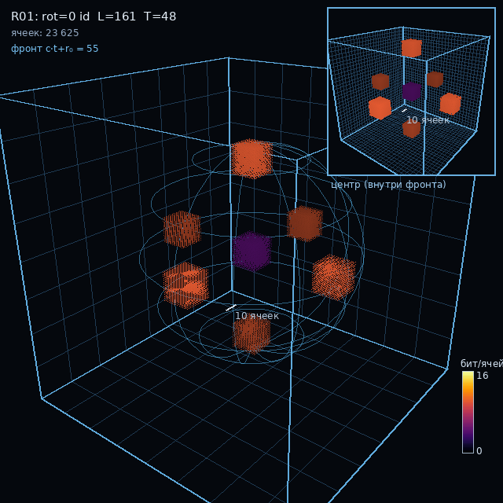
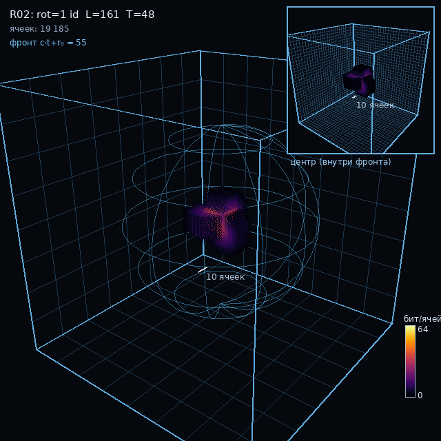
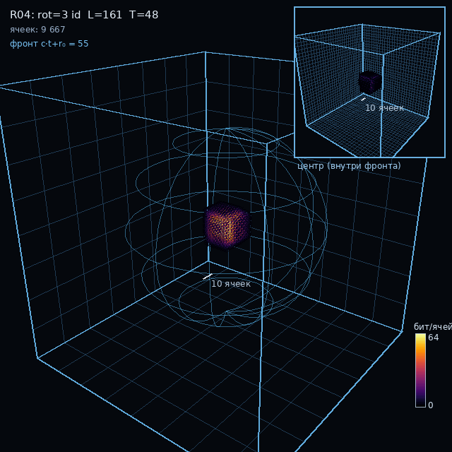
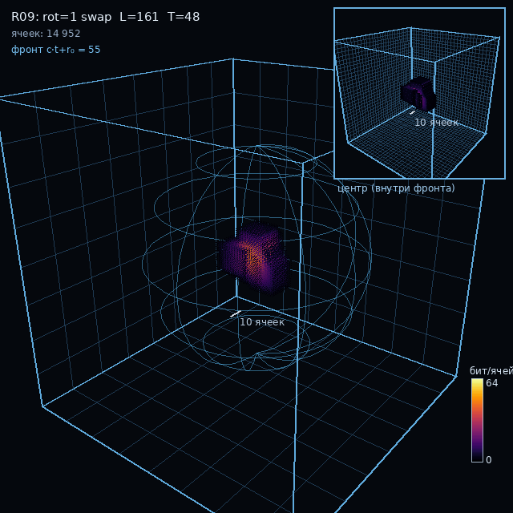
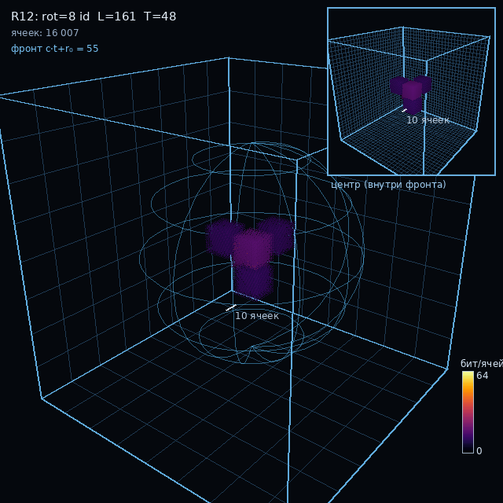

Третья часть построена по исправленной модели: в клетке 64 бита, зародыш несёт 216 000 единичных бит, и все они только переходят в соседние клетки. Ни одна единица не появляется из ничего и не исчезает. Пустые клетки пропускаются — симуляция идёт от зародыша, а не «по всей решётке сразу».
В первых двух частях были правила, где клетки «рождались», делились и умирали. Для этой модели так нельзя: информация не берётся из ничего. Здесь единственная операция — перенос бит:
popcount постоянна: 216 000 → 216 000 во всех 12 прогонах;Причинность. Бит за такт переходит не более чем на одну клетку, поэтому фронт не может обогнать c·t + r₀, где r₀ — радиус зародыша. Проверено численно для всех правил.
Меняются три вещи: поворот битов перед переносом, перестановка байтов и поле направлений (сдвиг канала на x+y+z). Зародыш один и тот же: 15³ клеток по 64 бита.
| ID | правило | rot | perm | field | клеток | фронт | max бит | класс |
|---|---|---|---|---|---|---|---|---|
R01 | прямые лучи: без поворота | 0 | id | 0 | 23 625 | 55.9 | 10 | пучки/лучи |
R02 | клубок: поворот на 1 бит | 1 | id | 0 | 19 185 | 22.5 | 40 | облако |
R03 | поворот на 2 | 2 | id | 0 | 10 875 | 16.0 | 64 | клубок |
R04 | поворот на 3 | 3 | id | 0 | 9 667 | 16.3 | 64 | клубок |
R05 | поворот на 5 | 5 | id | 0 | 6 180 | 14.5 | 64 | клубок |
R06 | поворот на байт | 8 | id | 0 | 10 395 | 19.7 | 64 | клубок |
R07 | поворот на 16 | 16 | id | 0 | 22 005 | 32.9 | 24 | облако |
R08 | поворот на 32 | 32 | id | 0 | 23 625 | 44.4 | 16 | пучки/лучи |
R09 | поворот 1 + перестановка байтов | 1 | swap | 0 | 14 952 | 22.4 | 57 | облако |
R10 | поворот 8 + перестановка байтов | 8 | swap | 0 | 33 075 | 55.9 | 16 | пучки/лучи |
R11 | поле направлений | 0 | id | 1 | 3 375 | 12.1 | 64 | клубок |
R12 | поворот 8 + поле направлений | 8 | id | 1 | 16 007 | 26.4 | 32 | облако |
Классы: пучки/лучи — фронт далеко, плотность низкая; облако — промежуточное; клубок — биты перемешались и остались компактно. Все три возникают из одного зародыша только за счёт перестановки битов.
На кадрах: полный куб 161³, зародыш в центре, голубая сфера — фронт c·t + r₀, справа сверху — увеличенный центр, справа снизу — шкала «бит/ячейка» (Inferno).





Сравнение с частью 2: там правила с рождением давали плотные блобы и сети, но нарушали сохранение. Здесь сохранение выполнено точно, и структуры получаются разреженными. Это не ошибка, а цена закона сохранения.
| Проверка | Статус | Значение |
|---|---|---|
| все 12 правил прогнаны | PASS | 12 |
| popcount сохраняется во всех правилах | PASS | {'start': 216000, 'ends': [216000]} |
| фронт не обгоняет c·t + радиус зародыша | PASS | 55.9 |
| пустые клетки не обрабатываются (активных < объёма) | PASS | 0.0079 |
| есть разные морфологии | PASS | ['клубок', 'облако', 'пучки/лучи'] |
| картинки созданы | PASS | 5 |
src/ca3d_bits.py — 64-битная клетка, каналы, активные клеткиscripts/run_ca3d3.py — 12 правил, картинки, results/ca3d3/report.jsonscripts/build_ca3d3_report.pyЧасти 1 и 2: инфляционная решётка, сети и блобы.